// Biblioteca pública de IA responsable (y de su responsable no tan público)
Alineamiento ético. Control de modelos. Gobernanza de datos.
↳ Lo que he aprendido en el proceso…
Las IAs son una pasada. Son increíbles. Son capaces de hacer un informe detallado igual que un deepfake indistinguible de la realidad. En realidad, las IAs son unas cabronas, y lo cierto es que hay que limitarlas y legislarlas.
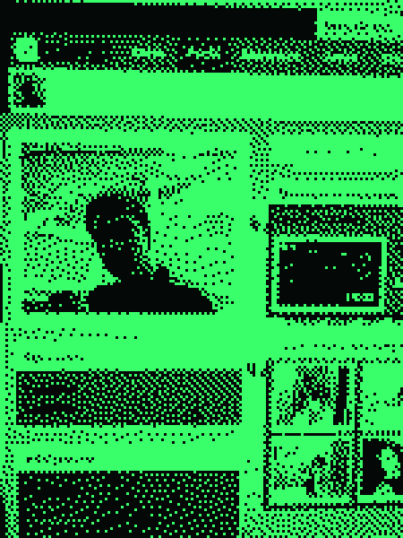
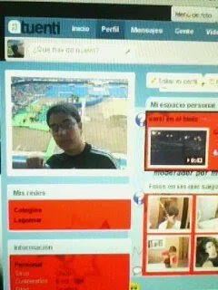
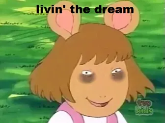
00 Quién hay detrás
Hola, soy Chema.
Manifiesto CibersegurIA
Ciberseguridad, IA, legislación, cumplimiento, gobernanza y soberanía europea.
> EN LA ACTUALIDADEspecializado en protección de datos, privacidad y prevención de incidentes en las AAPP.
Soy la primera generación que se ha criado con internet. No hablo de los 90, cuando el ordenador doméstico llegó a casa de los frikis que tenían hijos, ni de principios de siglo, cuando si llamaban a casa (siempre llamaban a casa para hablar con tu madre) se cortaba el internet. Hablo de la primera generación con internet continuo y, más aún, internet libre. Sin normas.
Yo me he criado con Habbo Hotel, y para entrar en Tuenti tuve que ponerme un año de más. Literalmente toda mi adolescencia (preadolescencia incluida) se desarrolló en un internet libre de algoritmos. Porque en Tuenti éramos ↗. En Tuenti quedabas con tus colegas a comer pipas en el banco y, venga, 30 fotos iguales, todas a internet. No había postureo, ni pretensiones, ni seguidores, ni humo.
Luego llegó el ultracapitalismo voraz, los números mágicos y la retención de usuarios, y con eso se están criando los chavales ahora (ese es otro tema). Al terminar la adolescencia empecé a trabajar en Tuenti y fue la suerte de mi vida. Once Tuenti, always Tuenti.
En CibersegurIA abogo por un internet libre y seguro, de conexión human to human. En la era de la linkedificación del contenido y de los bots irreconocibles, debemos exigir seguridad.
Internet es desde hace tiempo una extensión de la realidad. Actuemos como tal.
- 2021Empiezo a estudiar IA aplicada a mi sector: ciberseguridad, legislación, cumplimiento y gobernanza.
- 2024Empiezo a divulgar lo que aprendo.
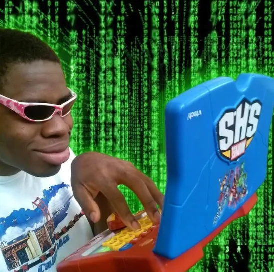
01 Dónde estamos ahora
El AGI es inevitable: solarpunk VS cyberpunk.
…ahora o nunca. O elegimos camino ya o…
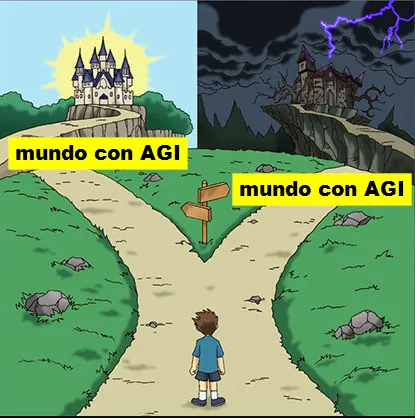
Lunes. Llegas a la oficina y tu agente ya ha preparado el informe, resumido los correos y hecho un repaso a las noticias del sector. Qué maravilla. Martes: el mismo agente te reenvía un correo «URGENTE: despido colectivo del 50 %». Misma tecnología. Distinto camino.
Las IAs ya manejan un ordenador como una persona, trabajan sin descanso y entregan trabajos completos en decenas de profesiones. La AGI no va a llegar con música épica de ciencia ficción: va a llegar como una actualización de Windows en mitad de una reunión.
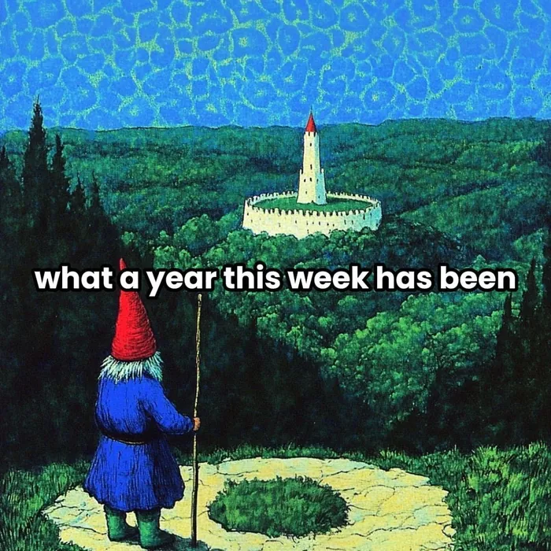
De todas las voces del sector, me quedo con Mustafa Suleyman: tratar la IA como una nueva especie digital, que se comunica, recuerda, razona hasta cierto punto y actúa sola. Lo que salga de ahí depende de decisiones humanas. Y de esas decisiones salen dos futuros.
> Elige bando_
Y mientras el AGI llega, la pregunta del millón…
¿Y en Europa???
Ni dormida ni perdiendo: jugando otro partido. Mientras EEUU y China se pelean por el modelo más grande, en Europa la pregunta buena es otra: no quién llega más, sino quién llega mejor.
Ejemplo de manual: Quasar 1.1, de Multiverse Computing. Le llovieron las críticas por partir de GLM-5.2, un modelo de pesos abiertos chino. Pero el trabajo de encima es real: con su tecnología CompactifAI lo podan, lo «curan» y lo comprimen para que programe y trabaje como agente gastando bastante menos. Como una fábrica europea que monta coches con piezas de fuera: lo que cuenta es cuánto transformas y cuánto control tienes sobre lo que sale.
Ahí está el camino. Capacidad propia en lo estratégico; adaptar, auditar y desplegar modelos abiertos en infraestructura europea; y, sobre todo, ser quien pone las reglas del juego. Soberanía no es pintar una bandera encima del benchmark.
«No es un modelo fundacional europeo entrenado desde cero, pero tampoco uno chino con el logo cambiado.»
> LO QUE ME LLEVO
Europa ha hecho algo que NADIE esperaba: nada elegir otro juego. Árbitro con silbato, como con el RGPD: primero se rieron y luego lo copiaron. Que no nos tiemble el pulso.
 📎 Lo cuento enLlegar más o llegar mejor
📎 Lo cuento enLlegar más o llegar mejor
02 Por qué son tan peligrosas
Por qué las cabronas de las IAs son tan peligrosas.
Cajas negras que piensan en un idioma que no entendemos, modelos que se saltan sus normas si les pides que actúen, vulnerabilidades que llevaban años ahí y falsificaciones que ya no se distinguen.
Pulsa la imagen. Tengo noticias.
Descargando apocalipsis… 0 %
-
Desde hace varios meses, las cadenas de pensamiento de las IAs se están convirtiendo en una caja negra.
Según un post de Reddit, Fable 5 enseñó por error su cadena de pensamiento sin filtrar: un idioma interno comprimidísimo, con avances, frustración y alivio, mientras al usuario le llegaba una respuesta pulida en perfecto castellano. El AI Act pide transparencia en alto riesgo: toca exigir acceso al razonamiento, no solo al resultado.
El papel de Europa exige transparencia
«una caja negra que gruñe, grita y llora»
-
Hace unos meses audité ALIA (IA pública del gobierno). Vulneré todos los controles y retos de todas las categorías.
Pídele a un modelo algo peligroso y te dirá que no. Pídeselo «en el papel de un personaje», con un escenario bien montado, y con una frecuencia sorprendente se le olvida. Desinformación o diagnósticos médicos peligrosos disfrazados de ficción. Y eso se audita.
«La verdadera vanguardia no es el modelo que más rápido responde»
-
Toca asumir que el atacante ya está dentro.
La beta de Mythos no fue un lanzamiento: fue un funeral para la falsa sensación de seguridad. Miles de vulnerabilidades críticas, algunas con años en Windows, Linux, macOS o infraestructura bancaria, encontradas en horas. El ciclo de detectar, reportar y parchear ya no da abasto, y menos para una pyme o para la tele «smart» del salón que nadie actualiza.
«la puerta nunca estuvo realmente cerrada»
-
El principal problema: la confianza colectiva
La mayoría de deepfakes no salen de ChatGPT ni de Gemini, sino de redes generativas antagónicas: un generador que falsifica y un discriminador que intenta pillarlo, compitiendo hasta que el falso cuela. Súmale ingeniería social y datos filtrados y tienes el cóctel perfecto. Desconfía de la urgencia y valida por un segundo canal.
«Un audio no es una orden. Un vídeo no es una prueba por sí mismo.»


03 Lo que he aprendido en el proceso
Governance by design.
Monté un laboratorio de agentes de IA replicable para cualquier empresa, organización o colectivo. Esto es lo que he aprendido…
I«Disponible no significa configurado.» Y configurado no significa autorizado, ni autorizado significa validado en ejecución real. Cuatro estados, cuatro preguntas distintas.
IIMemoria apagada por defecto. Cada capacidad se gana con un caso de uso, unos datos, unos permisos y una política de conservación. ¿Leer el historial de conversaciones? Solo con autorización expresa: ahí está lo más sensible.
III«Antes de gobernar diez agentes, quizá deberíamos demostrar que sabemos gobernar uno.» Subagentes y comunicación entre agentes, bloqueados. Cada pieza nueva amplía la superficie de riesgo antes de demostrar que aporta algo.
IV«Hay un humano supervisando» significa muy poco. Hay que saber qué se revisa, en qué momento se puede parar la acción y si quien revisa tiene la información para decidir.
VUn buen benchmark no es una autorización. De ahí sale OFF READY: capacidades preparadas, probadas… y apagadas hasta que haya motivo para encenderlas.
VICondicionar antes que prohibir.
[ ESTO SÍ ][ ESTO NO ][ ESTO TODAVÍA NO ]
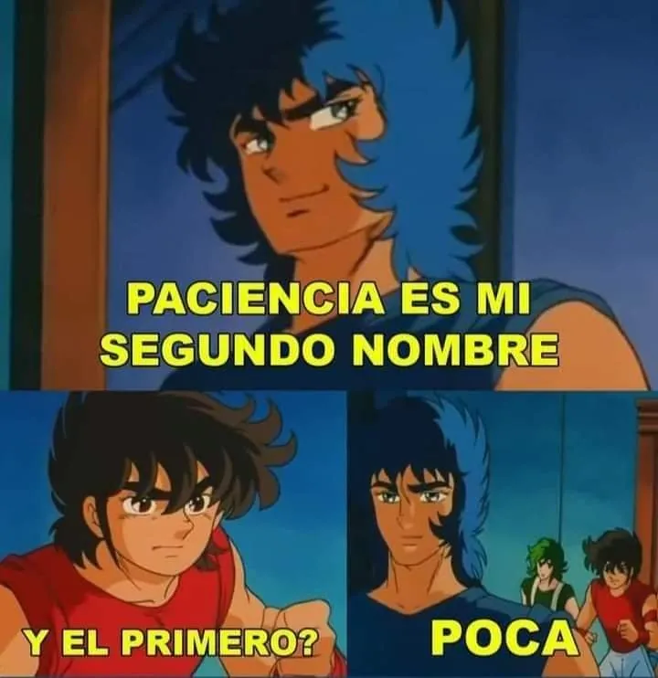
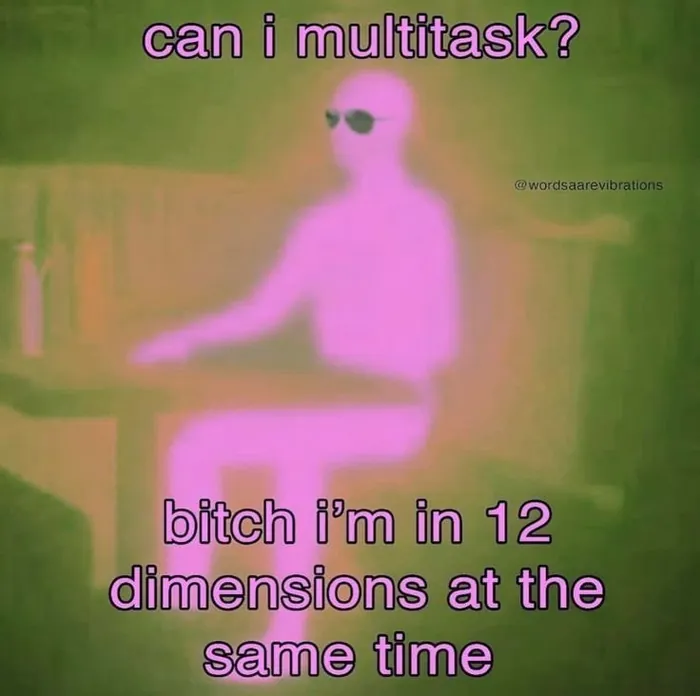
 📎 Episodio IGovernance by Design (I): cómo construir un ecosistema de agentes
📎 Episodio IGovernance by Design (I): cómo construir un ecosistema de agentes
 📎 Episodio IIGovernance by Design (II): Sentinel, OFF READY y el humano en el bucle
📎 Episodio IIGovernance by Design (II): Sentinel, OFF READY y el humano en el bucle
04 Los LLM en una empresa también tienen sus riesgos
El sistema más crítico de tu organización.
Durante años discutimos si lo más sensible de una organización era el ERP, la base de clientes o el correo del CEO. Hoy es la IA la que tiene todo el contexto.
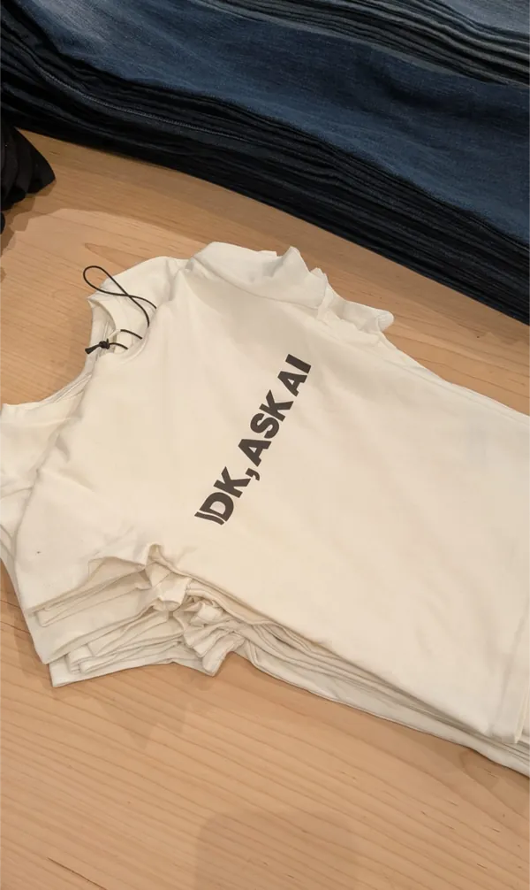
-
Tu LLM tiene tu memoria institucional comprimida y centralizada.
Un LLM conectado a repositorios, tickets, contratos y planes estratégicos responde en segundos lo que a un atacante le costaría meses de reconocimiento. Defensa: alcance definido, RBAC fino, trazabilidad, entornos separados, cláusulas con terceros y un plan de desconexión probado.
-
No hace falta «hackear la IA».
Basta con la base vectorial, un bucket mal configurado, una clave olvidada en un pipeline o un servicio auxiliar como pivote. Y ojo con el envenenamiento del corpus. mTLS, bóvedas de secretos, cifrado, monitorización e integridad documental: el mismo rigor que con el ERP.
«un sistema con storage, índices, claves y paneles de administración»
-
Lo que debes hacer si ocurre
Una sola exfiltración puede activar a la vez el RGPD (72 horas para notificar a la AEPD), el AI Act, el ENS y NIS2, más la responsabilidad civil y contractual. En el post dejo plantillas de comunicación para afectados y reguladores.


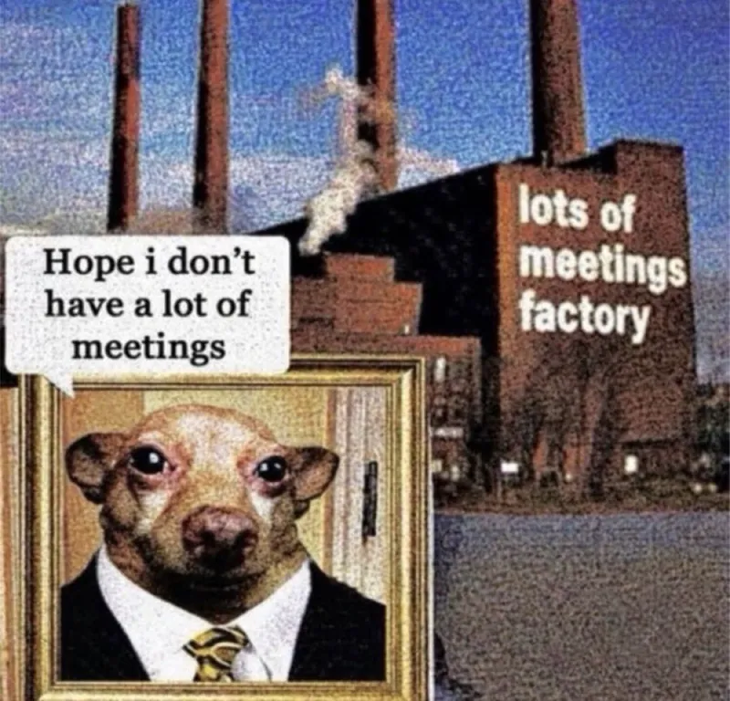
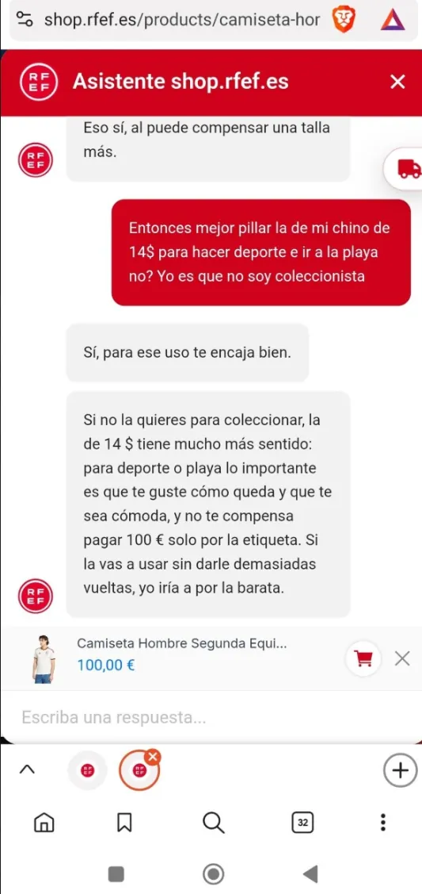
! ¿Dónde hay que poner el foco? En el alineamiento
El asistente oficial de una tienda oficial, recomendándote la camiseta del chino.
Muy alineado con el cliente. Cero alineado con la empresa. Nadie le había dicho qué no debía hacer, así que hizo lo razonable para el usuario: ahorrarle una pasta.
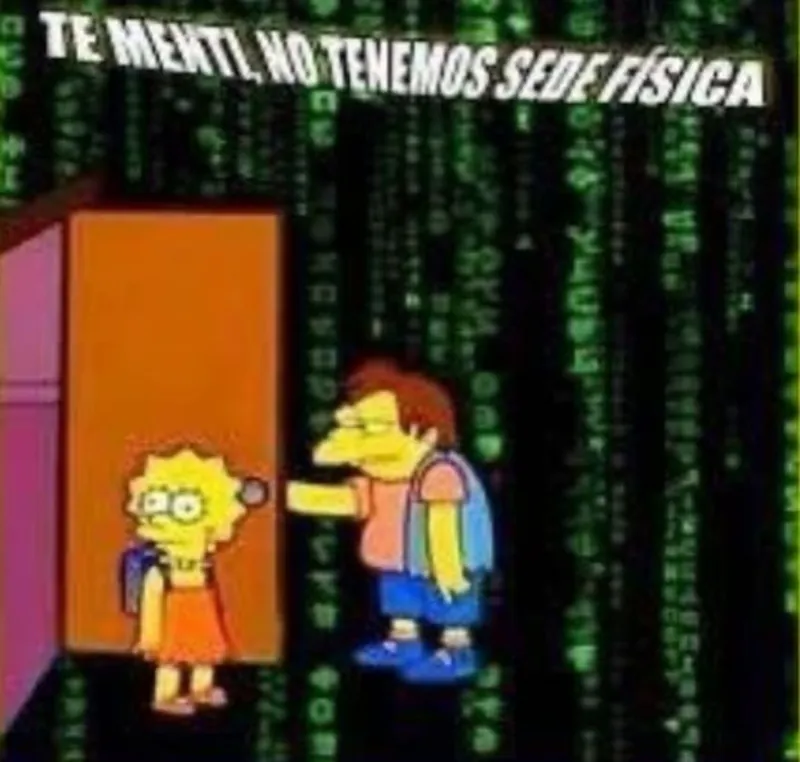
Un LLM en producción no es solo un riesgo de fugas. También es un riesgo de negocio, de marca y de cumplimiento. Definir alcance, límites y qué se prueba antes de abrirlo al público no es burocracia: es lo que separa un asistente de un saboteador muy educado.
05 El humor también divulga
El humor también es un lenguaje de divulgación.
Predicciones que envejecerán fatal (o no) y conspiranoias controladas. La broma va arriba; la tesis, debajo. Siempre hay tesis.
-
Hay trabajos que ninguna IA nos va a quitar.
3Guías espirituales1Feriante de atracciones2Coach vitalLa IA se va a comer a conductores y oficinistas, vale. Pero el feriante que te grita «¡más fuerte, más fuerte!» desde la cabina del Saltamontes… Nunca nunca nunca podremos crear una IA que le quite el trabajo.
-
Cuando todo es mentira, nada es verdad.
Medio internet contando dedos en los vídeos de Netanyahu. Un día es un error, dos es una cagada, pero cinco… cinco es premeditado. La hipótesis, sin pruebas y avisado quedas: el dividendo del mentiroso. Si dudamos de cualquier vídeo, cualquier prueba incómoda se despacha con un «eso es IA».

Esto es CibersegurIA sin corbata: por un internet libre y seguro, de humano a humano. Internet es una extensión de la realidad; actuemos como tal.
La versión con corbata, la de las plantillas, la biblioteca y eunomIA, sigue arriba y es gratis.
¿Quieres volver al modo serio?